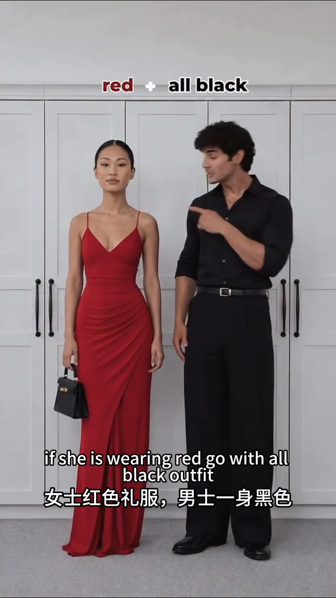
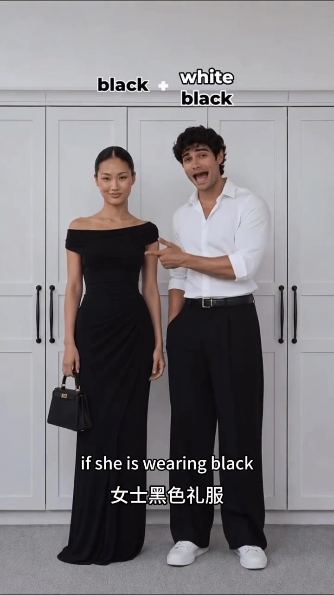
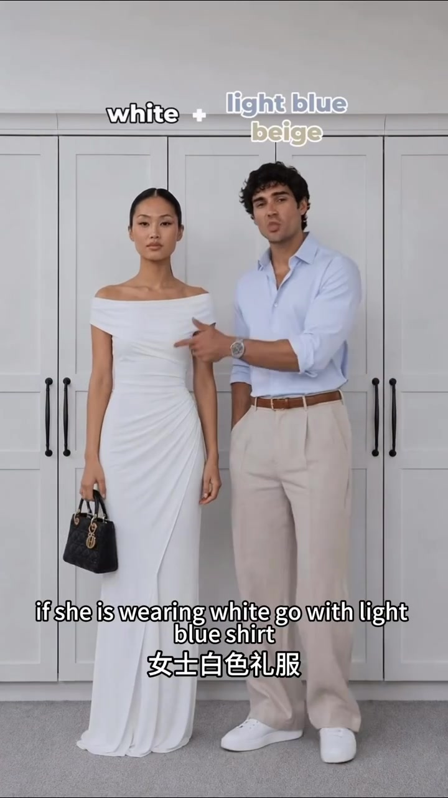
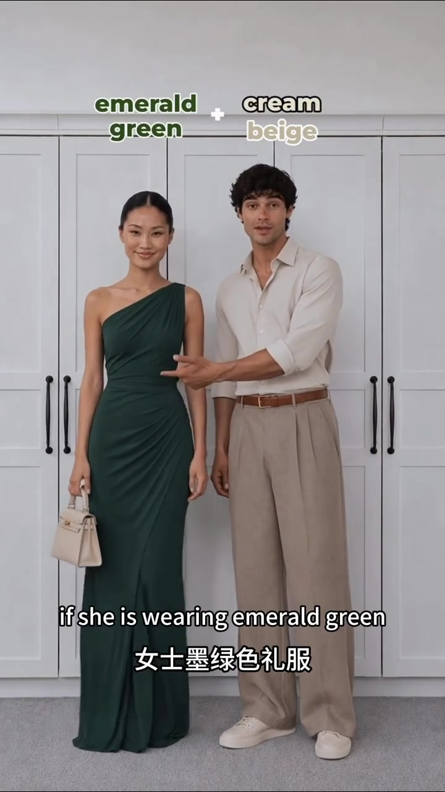
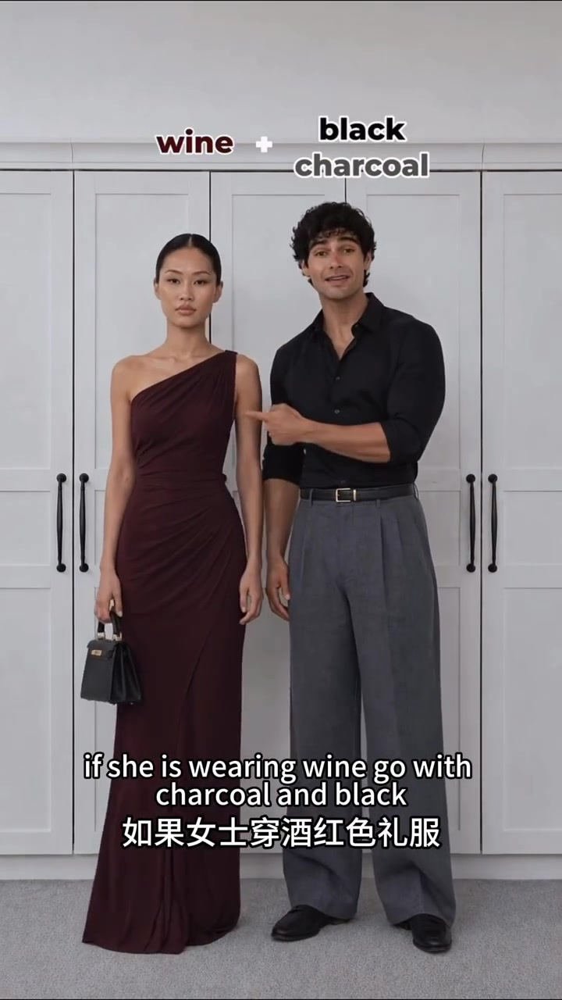

先定她的礼服，再配他的颜色
这是一条节奏很快的双人换装视频。固定机位里，两位模特始终并肩站在衣柜前；女士礼服颜色每次变化，男士的衬衫、长裤、腰带和鞋随之调整。视频没有展开理论，而是直接用上方英文配色标签和下方双语字幕展示结果。
五组示范的共同做法很清楚：女士礼服承担主要色彩，男士多使用黑、白、米、灰等中性色。以下按镜头出现顺序还原每次换装。
搭配 01 · 00:00
红色礼服：男士用一身黑把视觉中心留给她
视频从最醒目的红色开场。女士穿红色吊带礼服并拿黑色手袋；男士选择黑衬衫、黑西裤、黑皮鞋与黑腰带。两人站在一起时，黑色没有再引入新色块，红色因此成为画面里唯一的高饱和焦点。
画面字幕：“red + all black”“女士红色礼服，男士一身黑色”。

搭配 02 · 00:07
黑色礼服：白衬衫提亮，黑裤接住礼服颜色
镜头切换后，女士换成黑色露肩长礼服。男士没有继续全黑，而是穿白衬衫与黑色阔腿裤，并用白鞋呼应上装。上半身的白色让组合更轻，黑裤则与女士礼服保持连续。
画面上方给出的组合是：“black + white / black”。

搭配 03 · 00:13
白色礼服：浅蓝与米色把整体调到更柔和
第三组进入浅色区。女士穿白色礼服，男士用浅蓝衬衫、米色西裤、棕色腰带和白鞋搭配。视频把这组写成“light blue / beige”，颜色明度接近，视觉效果比黑白组合更柔和。
画面字幕：“white + light blue / beige”“女士白色礼服”。

搭配 04 · 00:20
墨绿色礼服：奶油色与米色降低对比
随后是墨绿色单肩礼服。男士选择奶油色衬衫与米色长裤，鞋子也保持浅色。这里没有复制女士的绿色，而是用两种低饱和中性色衬托深绿，女士的浅色手袋又把两人的配色连到一起。
画面上方明确标注：“emerald green + cream / beige”。

搭配 05 · 00:25
酒红色礼服：黑色与炭灰延续深沉气质
最后一组把红色压暗成酒红。男士穿黑衬衫、炭灰色西裤与黑鞋；相较开场的全黑，这次灰裤增加了层次，但整体仍停留在深色范围。结尾用一句英文把这种效果概括为更强势的气场。
画面字幕：“wine + black / charcoal”；Whisper 末句记录为：“That’s create boss energy”。

31 秒结束，公式留在画面里
视频最终给出的顺序是：红配全黑、黑配白加黑、白配浅蓝加米色、墨绿配奶油色加米色、酒红配黑加炭灰。它提供的是五组示范，不是适用于所有肤色、场地和礼服材质的普遍规则；实际赴宴仍需结合着装要求与现有单品。